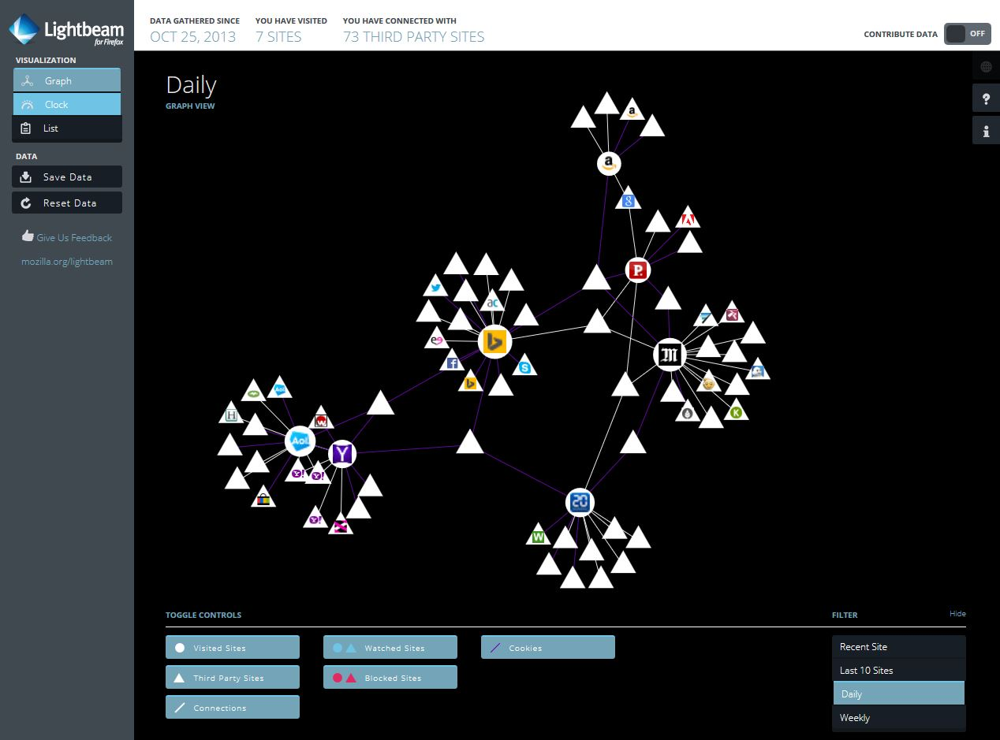

Goals & strategies
for an Open Web
Théo Chevalier – L3 MIAGE – 03/13/2014, Toulouse
We are best known for…

What we will talk about
- What Mozilla is
- What Mozilla do
- What Mozilla want for the future
Mozilla in numbers
- Users: half a Bilion users
- Languages: 80+
- Community: 1,000’s core contributors globally
- Staff: ~1,000 employees worldwide
Two things to keep in mind
- We’re a not-for-profit organisation
- What we do, we do it for the Web
UNLEASH THE FUTURE

Firefox OS
A complete mobile operating system
entirely built with Web technologies

Sneak peek – Firefox OS 1.x

Sneak peek – Firefox OS 1.x

Sneak peek – Firefox OS 1.x
Photo by: Stephen Shankland/CNETWAT.
Yet another mobile OS?
We don’t want
the third place
Today
- Silos
We want the Web to be
the platform on mobile
- Compatibility (write once, run everywhere)
- It’s easier to write a Web App
- Freedom for the user
- Open the mobile OS market
The $25 smartphone
Photo by: Stephen Shankland/CNET
Lightbeam

Lightbeam highlights interactions between sites intentionally visited and third partiesThe principles of universality of access irrespective of hardware or software platform, network infrastructure, language, culture, geographical location, or physical or mental impairment are core values
Tim Berners-Lee, father of the Web
But Mozilla is also…
things